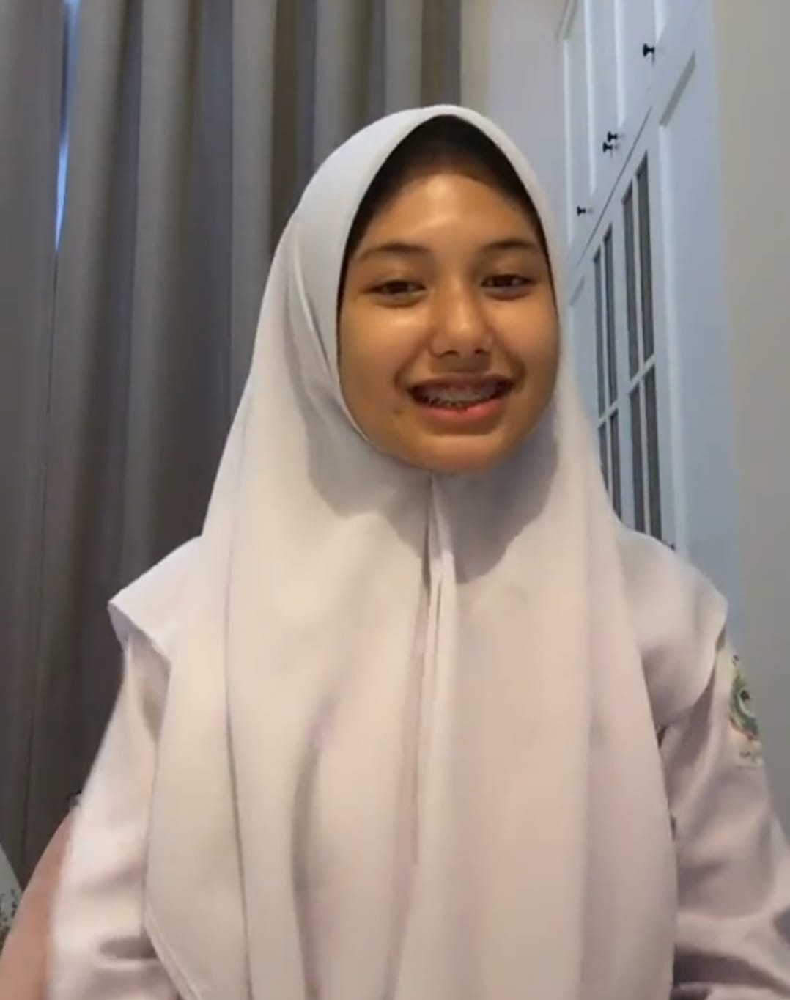
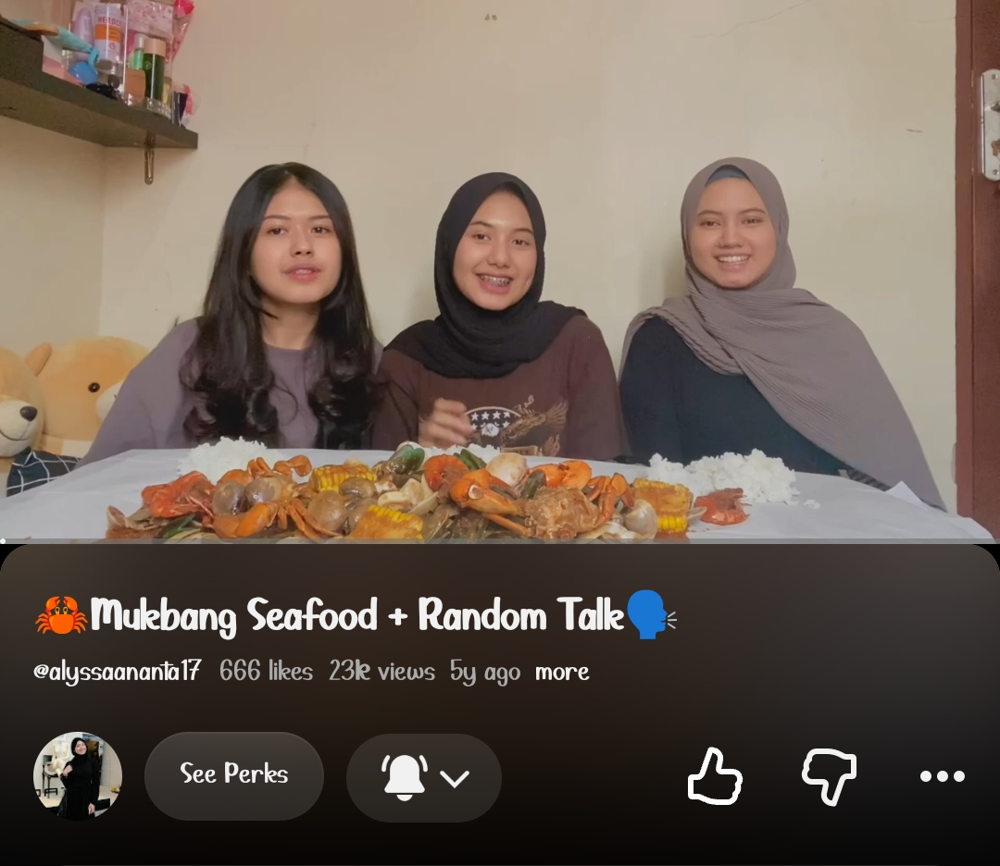
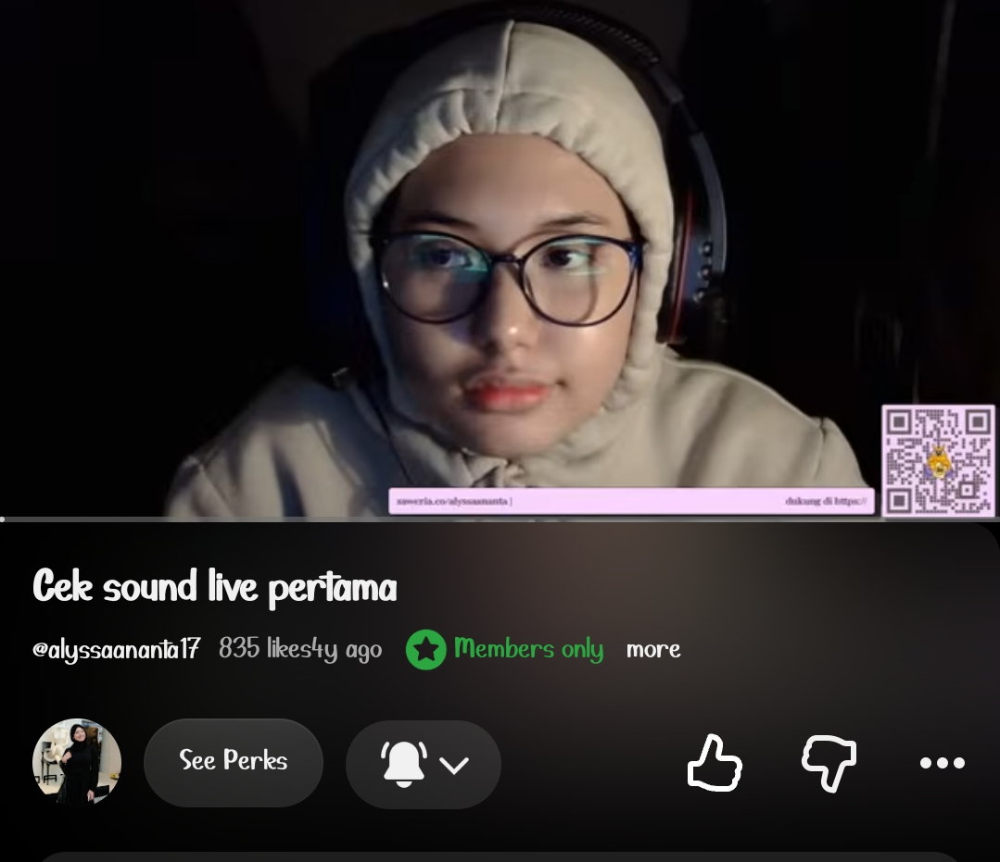
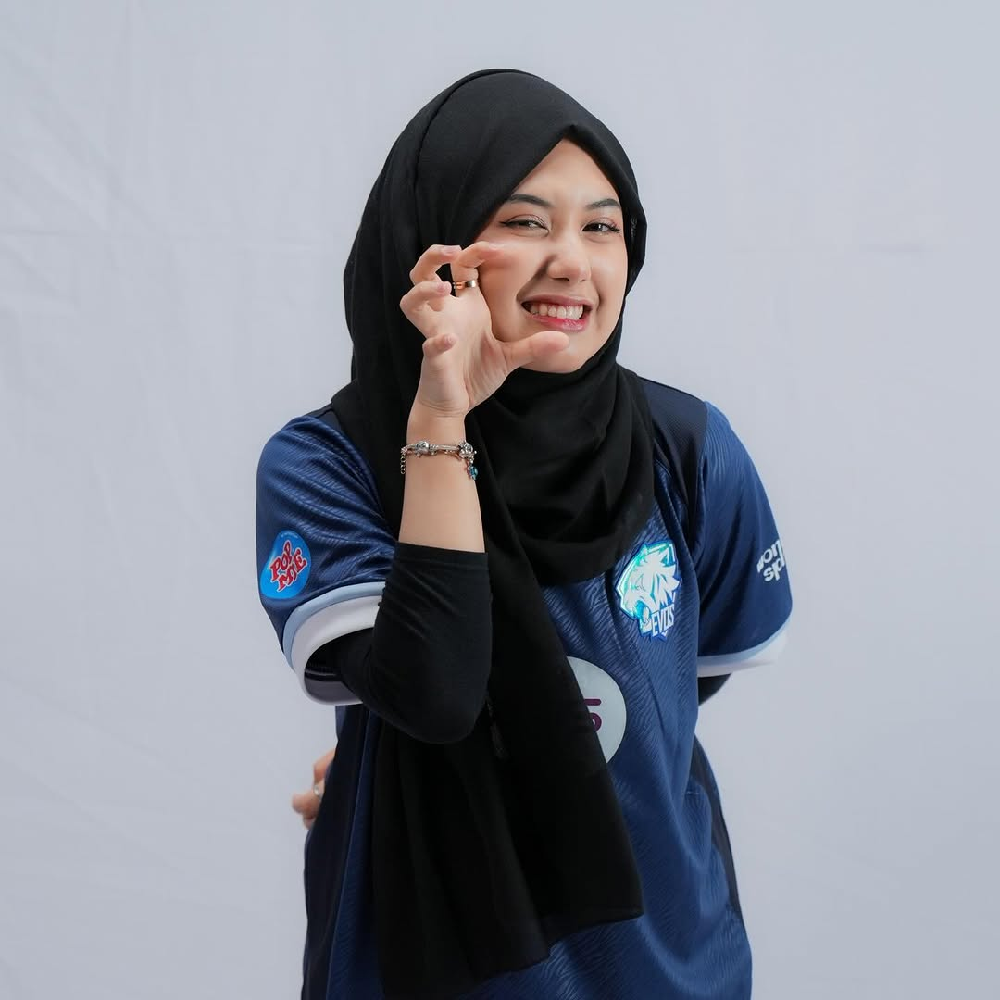
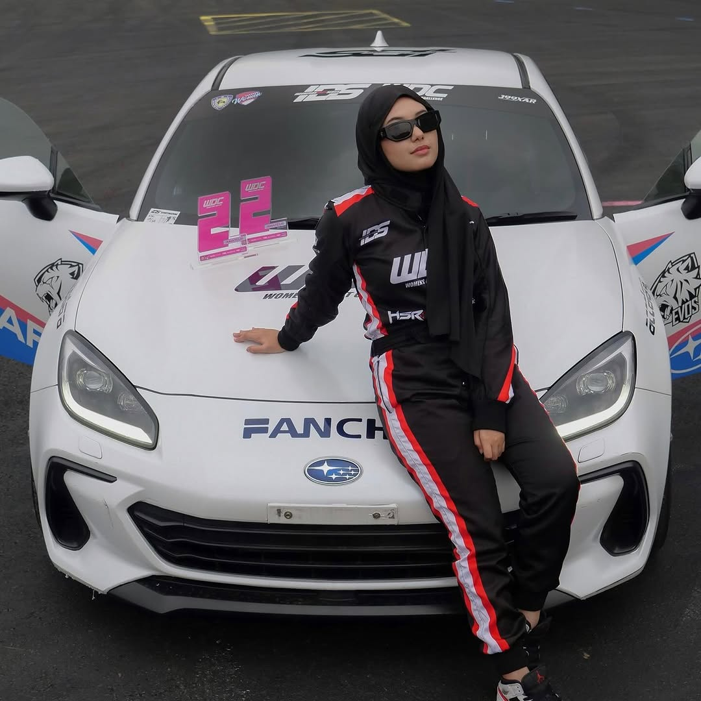
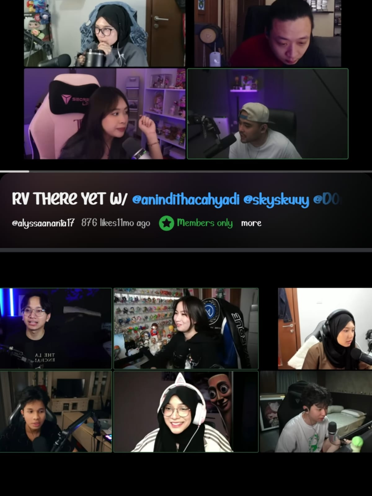
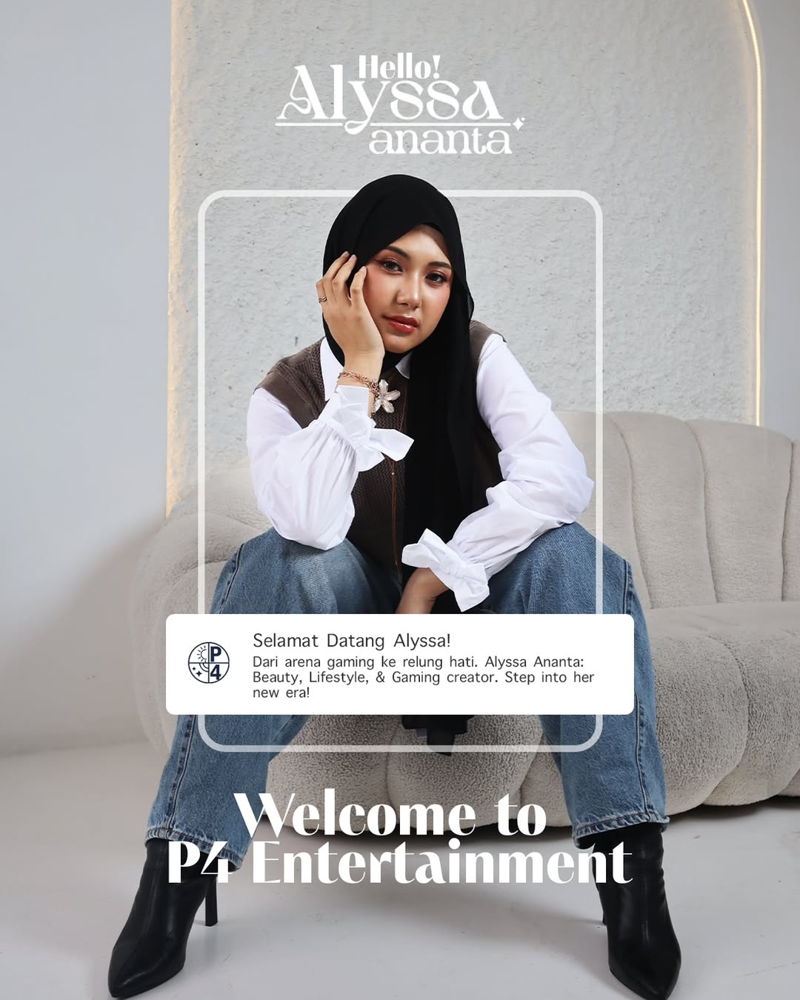

Perjalanan 2020 — 2026
Memulai perjalanan sebagai konten kreator di TikTok saat pandemi COVID-19. Konten relatable dan humoris viral, membuka jalan ke dunia hiburan digital.

Fokus membangun konsistensi konten di TikTok dengan berbagai format baru. Followers terus bertumbuh pesat, mulai dikenal di komunitas gaming Indonesia.

Mulai serius menekuni dunia gaming dan streaming. Bergabung dengan circle streamer Bala-Bala DeanKT.

16 September 2023, resmi diperkenalkan sebagai Brand Ambassador EVOS Esports. Satu-satunya BA EVOS yang berhijab.

Terjun ke dunia otomotif dengan mengikuti Women Drift Challenge 2024. Tampil percaya diri dengan hijab, mematahkan stereotipe perempuan di dunia drifting.

Setelah vakum hampir sembilan bulan dari dunia streaming, tahun 2025 menjadi awal babak baru bagi Alyssa. Masa menghilang itu membuat kehadirannya terasa berarti, terutama bagi para penonton yang menantikan kembalinya.
Ia kembali dengan semangat baru: membangun koneksi dengan komunitas, mencoba hal-hal baru, dan menjelajahi kolaborasi bersama kreator dan brand.

Merilis single debut "Sakit" diproduseri Mai Armada. Berkolaborasi dengan VVONDERLAND dalam "Blanket & Moon".
